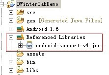
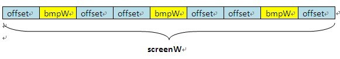
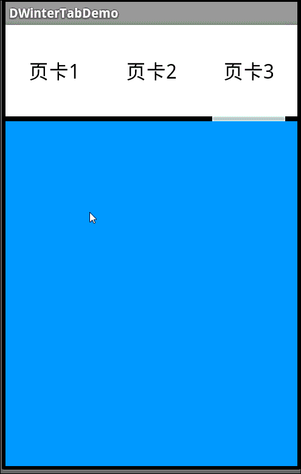

ViewPager多页面滑动切换以及动画效果
一、首先，我们来看一下效果图，这是新浪微博的Tab滑动效果。我们可以手势滑动，也可以点击上面的头标进行切换。与此同方式，白色横条会移动到相应的页卡头标下。这是一个动画效果，白条是缓慢滑动过去的。好了，接下来我们就来实现它。
二、在开始前，我们先要认识一个控件，ViewPager。它是google SDk中自带的一个附加包的一个类，可以用来实现屏幕间的切换。这个附加包是android-support-v4.jar，在最后的源码中会提供给大家，在libs文件夹中。当然你也可以自己从网上搜索最新的版本。找到它后，我们需要在项目中添加

三、我们先做界面，
界面设计很简单，第一行三个头标，第二行动画图片，第三行页卡内容展示。
<?xml version="1.0" encoding="utf-8"?><LinearLayout xmlns:android="http://schemas.android.com/apk/res/android
xmlns:umadsdk="http://schemas.android.com/apk/res/com.LoveBus
android:layout_width="fill_parent
android:layout_height="fill_parent
android:orientation="vertical" >
<LinearLayout
android:id="@+id/linearLayout1
android:layout_width="fill_parent
android:layout_height="100.0dip
android:background="FFFFFF" >
<TextView
android:id="@+id/text1
android:layout_width="fill_parent
android:layout_height="fill_parent
android:layout_weight="1.0
android:gravity="center
android:text="页卡1
android:textColor="000000
android:textSize="22.0dip" />
<TextView
android:id="@+id/text2
android:layout_width="fill_parent
android:layout_height="fill_parent
android:layout_weight="1.0
android:gravity="center
android:text="页卡2
android:textColor="000000
android:textSize="22.0dip" />
<TextView
android:id="@+id/text3
android:layout_width="fill_parent
android:layout_height="fill_parent
android:layout_weight="1.0
android:gravity="center
android:text="页卡3
android:textColor="000000
android:textSize="22.0dip" />
</LinearLayout>
<ImageView
android:id="@+id/cursor
android:layout_width="fill_parent
android:layout_height="wrap_content
android:scaleType="matrix
android:src="@drawable/a" />
<android.support.v4.view.ViewPager
android:id="@+id/vPager
android:layout_width="wrap_content
android:layout_height="wrap_content
android:layout_gravity="center
android:layout_weight="1.0
android:background="000000
android:flipInterval="30
android:persistentDrawingCache="animation" />
</LinearLayout>
我们要展示三个页卡，所以还需要三个页卡内容的界面设计，这里我们只设置了背景颜色，能起到区别作用即可。
<?xml version="1.0" encoding="utf-8"?><LinearLayout xmlns:android="http://schemas.android.com/apk/res/android
android:layout_width="fill_parent
android:layout_height="fill_parent
android:background="158684
android:orientation="vertical" >
</LinearLayout>
四、代码部分要进行初始化的工作
(1) 先来变量的定义
private ViewPager mPager;//页卡内容private List<View> listViews; // Tab页面列表
private ImageView cursor;// 动画图片
private TextView t1, t2, t3;// 页卡头标
private int offset = 0;// 动画图片偏移量
private int currIndex = 0;// 当前页卡编号
private int bmpW;// 动画图片宽度
(2) 初始化头标
/*** 初始化头标
*/
private void InitTextView() {
t1 = (TextView) findViewById(R.id.text1);
t2 = (TextView) findViewById(R.id.text2);
t3 = (TextView) findViewById(R.id.text3);
t1.setOnClickListener(new MyOnClickListener(0));
t2.setOnClickListener(new MyOnClickListener(1));
t3.setOnClickListener(new MyOnClickListener(2));
}
/**
* 头标点击监听
*/
public class MyOnClickListener implements View.OnClickListener {
private int index = 0;
public MyOnClickListener(int i) {
index = i;
}
@Override
public void onClick(View v) {
mPager.setCurrentItem(index);
}
};
相信大家看后都没什么问题，点击第几个，就展示第几个页卡内容。
(3) 初始化页卡内容区
/*** 初始化ViewPager
*/
private void InitViewPager() {
mPager = (ViewPager) findViewById(R.id.vPager);
listViews = new ArrayList<View>();
LayoutInflater mInflater = getLayoutInflater();
listViews.add(mInflater.inflate(R.layout.lay1, null));
listViews.add(mInflater.inflate(R.layout.lay2, null));
listViews.add(mInflater.inflate(R.layout.lay3, null));
mPager.setAdapter(new MyPagerAdapter(listViews));
mPager.setCurrentItem(0);
mPager.setOnPageChangeListener(new MyOnPageChangeListener());
}
我们将三个页卡界面装入其中，默认显示第一个页卡。这里我们还需要实现一个适配器。
/*** ViewPager适配器
*/
public class MyPagerAdapter extends PagerAdapter {
public List<View> mListViews;
public MyPagerAdapter(List<View> mListViews) {
this.mListViews = mListViews;
}
@Override
public void destroyItem(View arg0, int arg1, Object arg2) {
((ViewPager) arg0).removeView(mListViews.get(arg1));
}
@Override
public void finishUpdate(View arg0) {
}
@Override
public int getCount() {
return mListViews.size();
}
@Override
public Object instantiateItem(View arg0, int arg1) {
((ViewPager) arg0).addView(mListViews.get(arg1), 0);
return mListViews.get(arg1);
}
@Override
public boolean isViewFromObject(View arg0, Object arg1) {
return arg0 == (arg1);
}
@Override
public void restoreState(Parcelable arg0, ClassLoader arg1) {
}
@Override
public Parcelable saveState() {
return null;
}
@Override
public void startUpdate(View arg0) {
}
}
这里我们实现了各页卡的装入和卸载
(4) 初始化动画
/*** 初始化动画
*/
private void InitImageView() {
cursor = (ImageView) findViewById(R.id.cursor);
bmpW = BitmapFactory.decodeResource(getResources(), R.drawable.a)
.getWidth();// 获取图片宽度
DisplayMetrics dm = new DisplayMetrics();
getWindowManager().getDefaultDisplay().getMetrics(dm);
int screenW = dm.widthPixels;// 获取分辨率宽度
offset = (screenW / 3 - bmpW) / 2;// 计算偏移量
Matrix matrix = new Matrix();
matrix.postTranslate(offset, 0);
cursor.setImageMatrix(matrix);// 设置动画初始位置
}
根据屏幕的分辨率和图片的宽度计算动画移动的偏移量

实现页卡切换监听
/*** 页卡切换监听
*/
public class MyOnPageChangeListener implements OnPageChangeListener {
int one = offset * 2 + bmpW;// 页卡1 -> 页卡2 偏移量
int two = one * 2;// 页卡1 -> 页卡3 偏移量
@Override
public void onPageSelected(int arg0) {
Animation animation = null;
switch (arg0) {
case 0:
if (currIndex == 1) {
animation = new TranslateAnimation(one, 0, 0, 0);
} else if (currIndex == 2) {
animation = new TranslateAnimation(two, 0, 0, 0);
}
break;
case 1:
if (currIndex == 0) {
animation = new TranslateAnimation(offset, one, 0, 0);
} else if (currIndex == 2) {
animation = new TranslateAnimation(two, one, 0, 0);
}
break;
case 2:
if (currIndex == 0) {
animation = new TranslateAnimation(offset, two, 0, 0);
} else if (currIndex == 1) {
animation = new TranslateAnimation(one, two, 0, 0);
}
break;
}
currIndex = arg0;
animation.setFillAfter(true);// True:图片停在动画结束位置
animation.setDuration(300);
cursor.startAnimation(animation);
}
@Override
public void onPageScrolled(int arg0, float arg1, int arg2) {
}
@Override
public void onPageScrollStateChanged(int arg0) {
}
}
五、打完收工，快来看看自己的劳动成果吧
